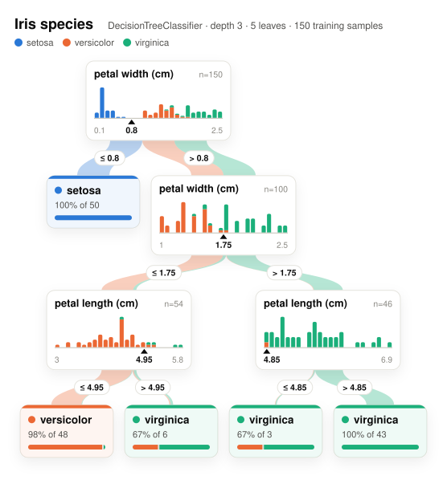

Our favorite methods
After developing and playing with imodels, we developed a few new
models to overcome limitations of existing interpretable models. Each has a post with its method,
benchmarks and code. The ones marked autoresearch were found by an
autoresearch loop of coding agents.

imodels.viz: figures you can read, pages you can explore
Static figures and interactive pages for 40+ interpretable and scikit-learn models, from trees and rule lists to risk scores and GAMs. A gallery of 32 examples with their code.
FastRiskScore: sparse integer risk scores
A few conditions, each worth a small integer number of points, with a calibrated risk for every total. Fits about 225× faster than FasterRisk with a lower training loss.
FastSmallTree: provably optimal small decision trees
The tree that minimizes error plus a penalty per leaf, with a certificate that no other tree on the binarized features scores better. Faster than existing optimal-tree packages.
GPGam: additive Gaussian processes over binned features
A GAM with pairwise interactions whose every shape function is a Gaussian process, with a posterior band and nothing to tune. The strongest interpretable model on our benchmarks.
MDI+: flexible tree-based feature importance
Generalizes the mean decrease in impurity of random forests through the link between trees and linear regression, so the importance can be tailored to the data and the task.

Hierarchical shrinkage: post-hoc regularization for trees
Shrinks the prediction at each node of any tree, or tree ensemble, towards its ancestors, without changing the tree. Fast, and often more accurate than the tree it starts from.

FIGS: fast interpretable greedy-tree sums
Grows a flexible number of trees in a sum, with a limit on the total number of splits, so the model stays small while capturing additive structure that a single tree cannot.